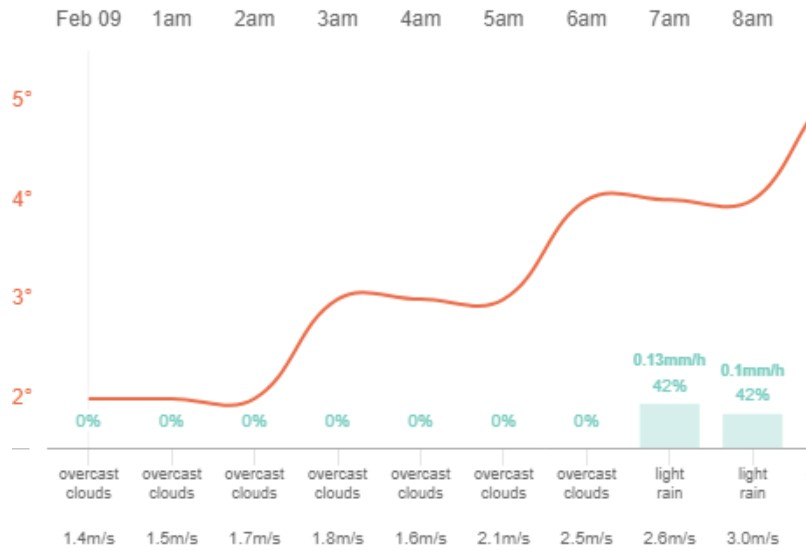

Proyecto ICCD332 Arquitectura de Computadores
1. New York Weather APP
Este es el proyecto de fin de semestre en donde se pretende demostrar las destrezas obtenidas durante el transcurso de la asignatura de Arquitectura de Computadores.
- Conocimientos de sistema operativo Linux
- Conocimientos de Emacs/Jupyter
- Configuración de Entorno para Data Science con Mamba/Anaconda
- Literate Programming
1.1. Estructura del proyecto
mkdir NewYorkWeather cd NewYorkWeather pwd
/home/andersonh/NewYorkWeather
El proyecto ha de tener los siguientes archivos y subdirectorios.
NewYorkWeather
├── CityTemperatureAnalysis.ipynb
├── clima-new york-hoy.csv
├── clima-new york-hoy.csv:Zone.Identifier
├── get-weather.sh
├── get_weather.py
├── get_weather.py:Zone.Identifier
├── main.py
├── output.log
├── output.log:Zone.Identifier
└── weather-site
├── build-site.el
├── build.sh
├── content
│ ├── images
│ └── index.org
└── public
└── images
6 directories, 12 files
1.2. Formulación del Problema
Se desea realizar un registro climatológico de una ciudad \(\mathcal{C}\). Para esto, escriba un script de Python/Java que permita obtener datos climatológicos desde el API de openweathermap. El API hace uso de los valores de latitud \(x\) y longitud \(y\) de la ciudad \(\mathcal{C}\) para devolver los valores actuales a un tiempo \(t\).
Los resultados obtenidos de la consulta al API se escriben en un archivo clima-<ciudad>-hoy.csv. Cada ejecución del script debe almacenar nuevos datos en el archivo. Utilice crontab y sus conocimientos de Linux y Programación para obtener datos del API de openweathermap con una periodicidad de 15 minutos mediante la ejecución de un archivo ejecutable denominado get-weather.sh. Obtenga al menos 50 datos. Verifique los resultados. Todas las operaciones se realizan en Linux o en el WSL. Las etapas del problema se subdividen en:
- Conformar los grupos de 2 estudiantes y definir la ciudad objeto de estudio.
- Crear su API gratuito en openweathermap
- Escribir un script en Python/Java que realice la consulta al API y escriba los resultados en clima-<ciudad>-hoy.csv. El archivo ha de contener toda la información que se obtiene del API en columnas. Se debe observar que los datos sobre lluvia (rain) y nieve (snow) se dan a veces si existe el fenómeno.
Desarrollar un ejecutable get-weather.sh para ejecutar el programa Python/Java.1
- Configurar Crontab para la adquisición de datos. Escriba el comando configurado. Respalde la ejecución de crontab en un archivo output.log
Realizar la presentación del Trabajo utilizando la generación del sitio web por medio de Emacs. Para esto es necesario crear la carpeta weather-site dentro del proyecto. Puede ajustar el look and feel según sus preferencias. El servidor a usar es el simple-httpd integrado en Emacs que debe ser instalado:
- Usando comandos Emacs:
M-x package-installpresionamos enter (i.e. RET) y escribimos el nombre del paquete: simple-httpd - Configurando el archivo init.el
(use-package simple-httpd :ensure t)
Instrucciones de sobre la creación del sitio web se tiene en el vídeo de instrucciones y en el archivo Org-Website.org en el GitHub del curso
- Usando comandos Emacs:
- Su código debe estar respaldado en GitHub/BitBucket, la dirección será remitida en la contestación de la tarea
1.3. Descripción del código
En esta sección se debe detallar segmentos importantes del código desarrollado así como la estrategia de solución adoptada por el grupo para resolver el problema. Divida su código en unidades funcionales para facilitar su presentación y exposición.
Lectura del API
import requests
import csv
from datetime import datetime
latitude = "40.7128"
longitude = "-74.0060"
api_key = "86d6b5c0cc760093cf4e87ff6828e3cb"
url = f"http://api.openweathermap.org/data/2.5/weather?lat={latitude}&lon={longitude}&appid={api_key}&units=metric"
# Realizar solicitud a la API // Convertir /Json/ a /Diccionario/ de Python
response = requests.get(url)
data = response.json()
print(data)
Guardar el archivo csv
if "name" in data:
city_name = data["name"]
temperature = data["main"]["temp"]
humidity = data["main"]["humidity"]
pressure = data["main"]["pressure"]
weather_description = data["weather"][0]["description"]
rain = data.get("rain", {}).get("1h", 0) # Lluvia (si hay)
snow = data.get("snow", {}).get("1h", 0) # Nieve (si hay)
# Nombre del archivo CSV
file_name = f"clima-{city_name.lower()}-hoy.csv"
# Encabezado y datos a guardar
header = ['Fecha', 'Ciudad', 'Temperatura (°C)', 'Humedad (%)', 'Presión (hPa)', 'Descripción', 'Lluvia (mm)', 'Nieve (mm)']
row = [datetime.now().strftime('%Y-%m-%d %H:%M:%S'), city_name, temperature, humidity, pressure, weather_description, rain, snow]
# Verificar si el archivo ya existe
file_exists = False
try:
with open(file_name, 'r'):
file_exists = True
except FileNotFoundError:
pass
# Guardar datos en CSV
with open(file_name, mode='a', newline='') as file:
writer = csv.writer(file)
if not file_exists:
writer.writerow(header) # Escribir encabezado solo si el archivo no existe
writer.writerow(row)
print(f"Datos climatológicos guardados en {file_name}")
else:
print("Error: No se pudo obtener el nombre de la ciudad. Verifique la API.")
1.4. Script ejecutable sh
Se coloca el contenido del script ejecutable. Recuerde que se debe utilizar el entorno de anaconda/mamba denominado iccd332 para la ejecución de Python; independientemente de que tenga una instalación nativa de Python
En el caso de los shell script se puede usar `which sh` para conocer la ubicación del ejecutable
which sh
/usr/bin/sh
De igual manera se requiere localizar el entorno de mamba iccd332 que será utilizado
which mamba
Con esto el archivo ejecutable a de tener (adapte el código según las condiciones de su máquina):
#!/usr/bin/sh source /home/andersonh/miniforge3/etc/profile.d/conda.sh eval "$(conda shell.bash hook)" conda activate iccd332 python /home/andersonh/NewYorkWeather/get_weather.py
Finalmente convierta en ejecutable como se explicó en clases y laboratorio
#!/usr/bin/sh ./get-weather.sh
1.5. Configuración de Crontab
Se indica la configuración realizada en crontab para la adquisición de datos
*/15 * * * * cd NewYorkWeather && ./get-weather.sh >> output.log 2>&1
- Recuerde que
2>&1permite guardar enoutput.logtanto la salida del programa como los errores en la ejecución.
2. Presentación de resultados
Para la presentación de resultados se utilizan las librerías de Python:
- matplotlib
- pandas
Alternativamente como pudo estudiar en el Jupyter Notebook
CityTemperatureAnalysis.ipynb, existen librerías alternativas que se
pueden utilizar para presentar los resultados gráficos. En ambos
casos, para que funcione los siguientes bloques de código, es
necesario que realice la instalación de los paquetes usando mamba
install <nombre-paquete>
2.1. Muestra Aleatoria de datos
Presentar una muestra de 10 valores aleatorios de los datos obtenidos.
import os
import pandas as pd
# lectura del archivo csv obtenido
df = pd.read_csv('/home/andersonh/NewYorkWeather/clima-new york-hoy.csv')
# se imprime la estructura del dataframe en forma de filas x columnas
print(df.shape)
Resultado del número de filas y columnas leídos del archivo csv
(11, 8)
table1 = df.sample(10) table = [list(table1)]+[None]+table1.values.tolist()
| Fecha | Ciudad | Temperatura (°C) | Humedad (%) | Presión (hPa) | Descripción | Lluvia (mm) | Nieve (mm) |
|---|---|---|---|---|---|---|---|
| 2025-02-08 17:15:15 | New York | 0.57 | 53 | 1022 | overcast clouds | 0 | 0 |
| 2025-02-08 16:30:07 | New York | 0.8 | 49 | 1023 | overcast clouds | 0 | 0 |
| 2025-02-08 16:11:16 | New York | 0.78 | 46 | 1023 | overcast clouds | 0 | 0 |
| 2025-02-06 19:25:23 | New York | 3.04 | 90 | 1011 | mist | 0 | 0 |
| 2025-02-08 16:15:07 | New York | 0.78 | 46 | 1023 | overcast clouds | 0 | 0 |
| 2025-02-08 17:06:17 | New York | 0.51 | 54 | 1022 | overcast clouds | 0 | 0 |
| 2025-02-08 16:45:04 | New York | 0.66 | 50 | 1022 | overcast clouds | 0 | 0 |
| 2025-02-08 17:15:09 | New York | 0.56 | 53 | 1022 | overcast clouds | 0 | 0 |
| 2025-02-08 17:00:08 | New York | 0.56 | 51 | 1022 | overcast clouds | 0 | 0 |
| 2025-02-08 17:14:50 | New York | 0.56 | 53 | 1022 | overcast clouds | 0 | 0 |
2.2. Gráfica Temperatura vs Tiempo

El siguiente cógido permite hacer la gráfica de la temperatura vs
tiempo para Org 9.7+. Para saber que versión dispone puede ejecutar
M-x org-version
import matplotlib.pyplot as plt
import matplotlib.dates as mdates
import pandas as pd
df = pd.read_csv('/home/andersonh/NewYorkWeather/clima-new-york-hoy.csv')
fig = plt.figure(figsize=(8, 6))
plt.plot(df['dt'], df['main_temp'])
plt.gca().xaxis.set_major_locator(mdates.DayLocator(interval=2))
plt.grid()
plt.title(f'Main Temp vs Time in {next(iter(set(df["name"])))}')
plt.xticks(rotation=40)
fig.tight_layout()
image_path = '/home/andersonh/NewYorkWeather/weather-site/content/images/temperature.png'
plt.savefig(image_path)
print(f"Imagen guardada en: {image_path}")
Debido a que el archivo index.org se abre dentro de la carpeta
content, y en cambio el servidor http de emacs se ejecuta desde la
carpeta public es necesario copiar el archivo a la ubicación
equivalente en /public/images
cp -rfv /home/andersonh/NewYorkWeather/weather-site/content/images/* /home/andersonh/NewYorkWeather/weather-site/public/images
2.3. Realice una gráfica de Humedad con respecto al tiempo
import matplotlib.pyplot as plt
import matplotlib.dates as mdates
fig = plt.figure(figsize=(8,6))
plt.plot(df['dt'], df['main_humidity'])
plt.gca().xaxis.set_major_locator(mdates.DayLocator(interval=2)) # Ajuste del intervalo
plt.gca().xaxis.set_major_formatter(mdates.DateFormatter('%Y-%m-%d')) # Formato de fecha
plt.grid()
plt.title(f'Humidity vs Time in {next(iter(set(df.name)))}')
plt.xticks(rotation=40)
fig.tight_layout()
fname = './images/humidity.png'
plt.savefig(fname)
fname
2.4. Opcional Presente alguna gráfica de interés.
3. Referencias
Notas al pie de página:
Recuerde que su máquina ha de disponer de un entorno de anaconda/mamba denominado iccd332 en el cual se dispone del interprete de Python